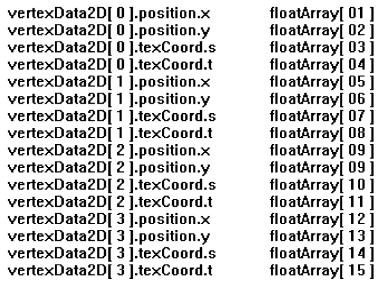
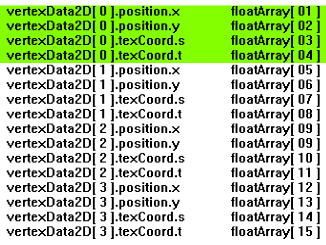
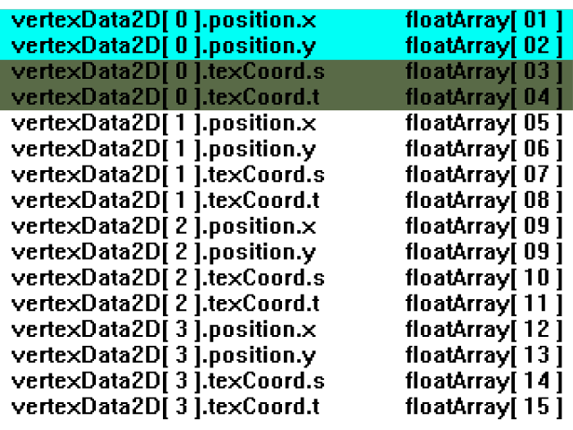
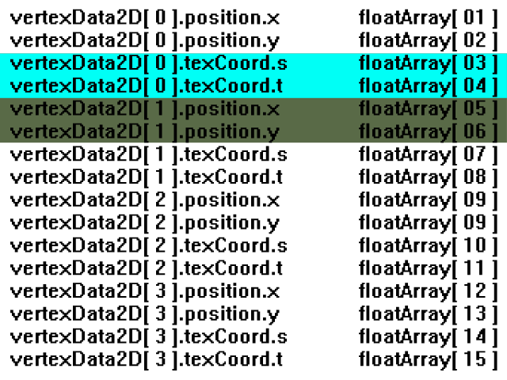

Textured Vertex Buffers
Last Updated 8/09/12
Using with glBegin()/glEnd() with glVertex() (known as immediate mode rendering) is deprecated in modern OpenGL implementations. If you want to render a textured polygon in modern OpenGL implementations, you're going to have to do it with VBOs.From LTexCoord.h
#ifndef LTEX_COORD_H
#define LTEX_COORD_H
#include "LOpenGL.h"
struct LTexCoord
{
GLfloat s;
GLfloat t;
};
#endif
Here we have a new file with a new data type. An LTexCoord is a data type we're going to use to make handling texture coordinates easier.
From LVertexData2D.h
#ifndef LVERTEX_DATA_2D_H
#define LVERTEX_DATA_2D_H
#include "LVertexPos2D.h"
#include "LTexCoord.h"
struct LVertexData2D
{
LVertexPos2D position;
LTexCoord texCoord;
};
#endif
Each one of the vertices for our textured quad has a vertex position and a texture coordinate, so we have another file with another data type to put them together. Each one of our
textured quad corners will be represented by a LVertexData2D object.
From LTexture.h
//Texture name
GLuint mTextureID;
//Current pixels
GLuint* mPixels;
//Texture dimensions
GLuint mTextureWidth;
GLuint mTextureHeight;
//Unpadded image dimensions
GLuint mImageWidth;
GLuint mImageHeight;
//VBO IDs
GLuint mVBOID;
GLuint mIBOID;
};
We have new member variables for our VBO and IBO.
From LTexture.h
private:
GLuint powerOfTwo( GLuint num );
/*
Pre Condition:
-None
Post Condition:
-Returns nearest power of two integer that is greater
Side Effects:
-None
*/
void initVBO();
/*
Pre Condition:
-A valid OpenGL context
-A loaded member texture
Post Condition:
-Generates VBO and IBO to use for rendering
Side Effects:
-Binds NULL VBO and IBO
*/
void freeVBO();
/*
Pre Condition:
-A generated VBO
Post Condition:
-Frees VBO and IBO
Side Effects:
-None
*/
We also have the new functions initVBO() and freeVBO() handle our VBO variables.
From LTexture.cpp
LTexture::LTexture()
{
//Initialize texture ID and pixels
mTextureID = 0;
mPixels = NULL;
//Initialize image dimensions
mImageWidth = 0;
mImageHeight = 0;
//Initialize texture dimensions
mTextureWidth = 0;
mTextureHeight = 0;
//Initialize VBO
mVBOID = 0;
mIBOID = 0;
}
As always, don't forget to initialize your variables.
From LTexture.cpp
void LTexture::initVBO()
{
//If texture is loaded and VBO does not already exist
if( mTextureID != 0 && mVBOID == 0 )
{
//Vertex data
LVertexData2D vData[ 4 ];
GLuint iData[ 4 ];
//Set rendering indices
iData[ 0 ] = 0;
iData[ 1 ] = 1;
iData[ 2 ] = 2;
iData[ 3 ] = 3;
//Create VBO
glGenBuffers( 1, &mVBOID );
glBindBuffer( GL_ARRAY_BUFFER, mVBOID );
glBufferData( GL_ARRAY_BUFFER, 4 * sizeof(LVertexData2D), vData, GL_DYNAMIC_DRAW );
//Create IBO
glGenBuffers( 1, &mIBOID );
glBindBuffer( GL_ELEMENT_ARRAY_BUFFER, mIBOID );
glBufferData( GL_ELEMENT_ARRAY_BUFFER, 4 * sizeof(GLuint), iData, GL_DYNAMIC_DRAW );
//Unbind buffers
glBindBuffer( GL_ARRAY_BUFFER, NULL );
glBindBuffer( GL_ELEMENT_ARRAY_BUFFER, NULL );
}
}
Here's our VBO initializer. Notice how it will only run if a texture is already loaded. There's no point in a textured VBO with no texture.
First we declare our vertex data and index data we're going to send to the GPU. Then we set our indices. The reason we aren't setting our vertex data is because it's going to be set in the rendering function. The reason we're using "GL_DYNAMIC_DRAW" is because we're going to be updating the vertex data, as opposed to the previous tutorial where we sent the data once and reused it.
As with previous the tutorial, we generate the buffers and send the data to them. After our buffers are created, we unbind the buffers.
First we declare our vertex data and index data we're going to send to the GPU. Then we set our indices. The reason we aren't setting our vertex data is because it's going to be set in the rendering function. The reason we're using "GL_DYNAMIC_DRAW" is because we're going to be updating the vertex data, as opposed to the previous tutorial where we sent the data once and reused it.
As with previous the tutorial, we generate the buffers and send the data to them. After our buffers are created, we unbind the buffers.
From LTexture.h
bool LTexture::loadTextureFromPixels32( GLuint* pixels, GLuint imgWidth, GLuint imgHeight, GLuint texWidth, GLuint texHeight )
{
//Free texture if it exists
freeTexture();
//Get image dimensions
mImageWidth = imgWidth;
mImageHeight = imgHeight;
mTextureWidth = texWidth;
mTextureHeight = texHeight;
//Generate texture ID
glGenTextures( 1, &mTextureID );
//Bind texture ID
glBindTexture( GL_TEXTURE_2D, mTextureID );
//Generate texture
glTexImage2D( GL_TEXTURE_2D, 0, GL_RGBA, mTextureWidth, mTextureHeight, 0, GL_RGBA, GL_UNSIGNED_BYTE, pixels );
//Set texture parameters
glTexParameteri( GL_TEXTURE_2D, GL_TEXTURE_MAG_FILTER, GL_LINEAR );
glTexParameteri( GL_TEXTURE_2D, GL_TEXTURE_MIN_FILTER, GL_LINEAR );
glTexParameteri( GL_TEXTURE_2D, GL_TEXTURE_WRAP_S, DEFAULT_TEXTURE_WRAP );
glTexParameteri( GL_TEXTURE_2D, GL_TEXTURE_WRAP_T, DEFAULT_TEXTURE_WRAP );
//Unbind texture
glBindTexture( GL_TEXTURE_2D, NULL );
//Check for error
GLenum error = glGetError();
if( error != GL_NO_ERROR )
{
printf( "Error loading texture from %p pixels! %s\n", pixels, gluErrorString( error ) );
return false;
}
//Generate VBO
initVBO();
return true;
}
We call our VBO initializer whenever we load a texture so the VBO is ready to use for rendering our textured quad. As you can see, the rest of our texture loading is the same as
before. The only part our VBO is going to affect is how the textured quad is rendered.
From LTexture.cpp
void LTexture::render( GLfloat x, GLfloat y, LFRect* clip )
{
//If the texture exists
if( mTextureID != 0 )
{
//Texture coordinates
GLfloat texTop = 0.f;
GLfloat texBottom = (GLfloat)mImageHeight / (GLfloat)mTextureHeight;
GLfloat texLeft = 0.f;
GLfloat texRight = (GLfloat)mImageWidth / (GLfloat)mTextureWidth;
//Vertex coordinates
GLfloat quadWidth = mImageWidth;
GLfloat quadHeight = mImageHeight;
//Handle clipping
if( clip != NULL )
{
//Texture coordinates
texLeft = clip->x / mTextureWidth;
texRight = ( clip->x + clip->w ) / mTextureWidth;
texTop = clip->y / mTextureHeight;
texBottom = ( clip->y + clip->h ) / mTextureHeight;
//Vertex coordinates
quadWidth = clip->w;
quadHeight = clip->h;
}
//Move to rendering point
glTranslatef( x, y, 0.f );
At the top of the LTexture render() function, our vertex and texture coordinate calculation is pretty much the same as when we used immediate mode. The data itself isn't changing,
it's how it's being sent to the GPU that's changing.
From LTexture.cpp
//Set vertex data
LVertexData2D vData[ 4 ];
//Texture coordinates
vData[ 0 ].texCoord.s = texLeft; vData[ 0 ].texCoord.t = texTop;
vData[ 1 ].texCoord.s = texRight; vData[ 1 ].texCoord.t = texTop;
vData[ 2 ].texCoord.s = texRight; vData[ 2 ].texCoord.t = texBottom;
vData[ 3 ].texCoord.s = texLeft; vData[ 3 ].texCoord.t = texBottom;
//Vertex positions
vData[ 0 ].position.x = 0.f; vData[ 0 ].position.y = 0.f;
vData[ 1 ].position.x = quadWidth; vData[ 1 ].position.y = 0.f;
vData[ 2 ].position.x = quadWidth; vData[ 2 ].position.y = quadHeight;
vData[ 3 ].position.x = 0.f; vData[ 3 ].position.y = quadHeight;
After calculating our texture coordinates and vertex coordinates, we set the data in the vertex data array.
If any of you are confused why the vertex data is set like this, this code should actually look familiar.
If any of you are confused why the vertex data is set like this, this code should actually look familiar.
From old LTexture render()
//Render textured quad
glBegin( GL_QUADS );
glTexCoord2f( texLeft, texTop ); glVertex2f( 0.f, 0.f );
glTexCoord2f( texRight, texTop ); glVertex2f( quadWidth, 0.f );
glTexCoord2f( texRight, texBottom ); glVertex2f( quadWidth, quadHeight );
glTexCoord2f( texLeft, texBottom ); glVertex2f( 0.f, quadHeight );
glEnd();
We're just specifying the same vertex/texture coordinates as we did before, only now the data is being put in an array.
From LTexture.cpp
//Set texture ID
glBindTexture( GL_TEXTURE_2D, mTextureID );
//Enable vertex and texture coordinate arrays
glEnableClientState( GL_VERTEX_ARRAY );
glEnableClientState( GL_TEXTURE_COORD_ARRAY );
After setting our vertex/texture coordinates, it's time to render our textured quad. To do that we have to bind our texture, enable vertex coordinate arrays with "GL_VERTEX_ARRAY"
and also enable texture coordinate arrays with "GL_TEXTURE_COORD_ARRAY".
From LTexture.cpp
//Bind vertex buffer
glBindBuffer( GL_ARRAY_BUFFER, mVBOID );
//Update vertex buffer data
glBufferSubData( GL_ARRAY_BUFFER, 0, 4 * sizeof(LVertexData2D), vData );
Before we can render our textured quad, we need to update the vertex data in the VBO with the vertex data we calculated at the top of the render() function. First we bind the VBO
so we can do operations on it. Then we call glBufferSubData() to update the vertex data on the current VBO much in the same way you would use glTexSubImage2D() to update a
texture.
The first argument specifies what type of data you're updating. The second argument is the byte offset you want to start updating the data, and because we're updating the whole VBO, we start from the beginning address 0. The third argument is the size of the data you're updating in bytes. We're sending 4 LVertexData2Ds, so it's 4 times the size of a LVertexData2D. The last argument is the pointer to the vertex data.
The first argument specifies what type of data you're updating. The second argument is the byte offset you want to start updating the data, and because we're updating the whole VBO, we start from the beginning address 0. The third argument is the size of the data you're updating in bytes. We're sending 4 LVertexData2Ds, so it's 4 times the size of a LVertexData2D. The last argument is the pointer to the vertex data.
From LTexture.cpp
//Set texture coordinate data
glTexCoordPointer( 2, GL_FLOAT, sizeof(LVertexData2D), (GLvoid*)offsetof( LVertexData2D, texCoord ) );
//Set vertex data
glVertexPointer( 2, GL_FLOAT, sizeof(LVertexData2D), (GLvoid*)offsetof( LVertexData2D, position ) );
We have to set the vertex pointer like we did last time, and now we have to set the texture coordinate pointer since we're texturing. As with immediate mode, you want to send
your texture coordinates before your vertex coordinates. Because we have our vertex coordinates and texture coordinates in the same VBO, setting the pointers is a bit more
involved.
The first argument for the glPointer functions is how many axes per coordinate. The second argument is the data type for the pointer data. The third argument is the stride.
What is stride? Remember how I said in previous tutorials that since our structure is made up entirely of GLfloats, we can treat it like an array of floats? That still true:
Stride is the space between each set of data. When say the stride is sizeof(LVertexData2D) for the vertex pointer, you'll see that the starting address of each vertex is a LVertexData2D apart in bytes:
So the way we're setting up the vertex pointer is to have OpenGL read in two GLfloats, shift over sizeof(LVertexData2D) bytes, read another two GLfloats, and so on until all the vertices are read:
You may have noticed that the stride for the texture coordinates is also sizeof(LVertexData2D), but the texture coordinates are placed differently:
Using the offsetof macro, we can give the vertex and texture coordinate pointers different starting address. When we define the last argument of the glPointer functions, the starting address of the data, we give it the byte offset of the member within the LVertexData2D struct.
Remember: we have a VBO bound, so any address we give the function is going to be retrieved from VBO memory.
The first argument for the glPointer functions is how many axes per coordinate. The second argument is the data type for the pointer data. The third argument is the stride.
What is stride? Remember how I said in previous tutorials that since our structure is made up entirely of GLfloats, we can treat it like an array of floats? That still true:

Stride is the space between each set of data. When say the stride is sizeof(LVertexData2D) for the vertex pointer, you'll see that the starting address of each vertex is a LVertexData2D apart in bytes:

So the way we're setting up the vertex pointer is to have OpenGL read in two GLfloats, shift over sizeof(LVertexData2D) bytes, read another two GLfloats, and so on until all the vertices are read:

You may have noticed that the stride for the texture coordinates is also sizeof(LVertexData2D), but the texture coordinates are placed differently:

Using the offsetof macro, we can give the vertex and texture coordinate pointers different starting address. When we define the last argument of the glPointer functions, the starting address of the data, we give it the byte offset of the member within the LVertexData2D struct.
Remember: we have a VBO bound, so any address we give the function is going to be retrieved from VBO memory.
From LTexture.cpp
//Draw quad using vertex data and index data
glBindBuffer( GL_ELEMENT_ARRAY_BUFFER, mIBOID );
glDrawElements( GL_QUADS, 4, GL_UNSIGNED_INT, NULL );
With our vertex coordinate and texture coordinate data set, we bind our IBO and render our textured VBO quad.
You may be wondering why didn't we update the IBO the same way we updated our VBO. Remember that our IBO is set so we render 4 vertices in order. While our vertex data may change, the fact that we will render 4 vertices in order will not change.
You may be wondering why didn't we update the IBO the same way we updated our VBO. Remember that our IBO is set so we render 4 vertices in order. While our vertex data may change, the fact that we will render 4 vertices in order will not change.
From LTexture.cpp
//Disable vertex and texture coordinate arrays
glDisableClientState( GL_TEXTURE_COORD_ARRAY );
glDisableClientState( GL_VERTEX_ARRAY );
}
}
After we're done rendering our VBO textured quad, we disable the vertex and texture coordinate arrays.
From LTexture.cpp
void LTexture::freeVBO()
{
//Free VBO and IBO
if( mVBOID != 0 )
{
glDeleteBuffers( 1, &mVBOID );
glDeleteBuffers( 1, &mIBOID );
}
}
When we're done with our VBO and IBO, we free them using glDeleteBuffers().
From LTexture.cpp
void LTexture::freeTexture()
{
//Delete texture
if( mTextureID != 0 )
{
glDeleteTextures( 1, &mTextureID );
mTextureID = 0;
}
//Delete pixels
if( mPixels != NULL )
{
delete[] mPixels;
mPixels = NULL;
}
mImageWidth = 0;
mImageHeight = 0;
mTextureWidth = 0;
mTextureHeight = 0;
}
We don't free the VBO when we free the texture. It could happen where we load one texture and then another. In this case we can reuse the VBO from texture to texture.
From LTexture.cpp
LTexture::~LTexture()
{
//Free texture data if needed
freeTexture();
//Free VBO and IBO if needed
freeVBO();
}
We free the VBO after the LTexture object itself is deallocated.
From LUtil.cpp
bool loadMedia()
{
if( !gVBOTexture.loadTextureFromFile( "18_textured_vertex_buffers/opengl.png" ) )
{
printf( "Unable to load OpenGL texture!\n" );
return false;
}
return true;
}
void update()
{
}
void render()
{
//Clear color buffer
glClear( GL_COLOR_BUFFER_BIT );
//Initialize modelview matrix
glLoadIdentity();
//Render textured quad using VBOs
gVBOTexture.render( ( SCREEN_WIDTH - gVBOTexture.imageWidth() ) / 2.f, ( SCREEN_HEIGHT - gVBOTexture.imageHeight() ) / 2.f );
//Update screen
glutSwapBuffers();
}
As you can see, all these VBO operations are invisible outside of the class.